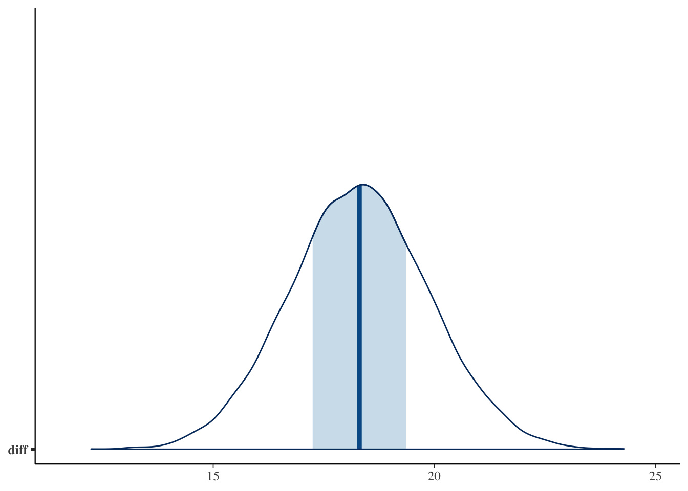
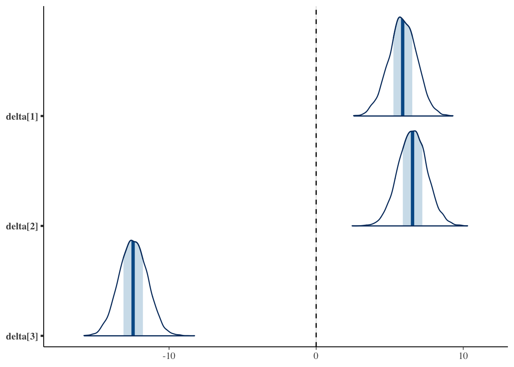
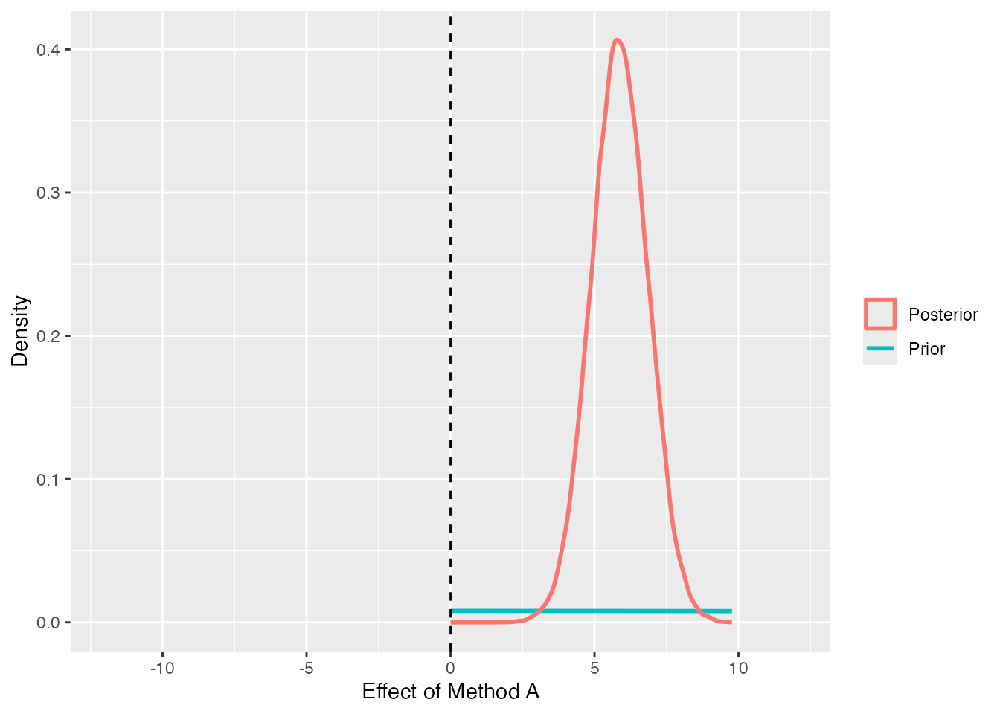
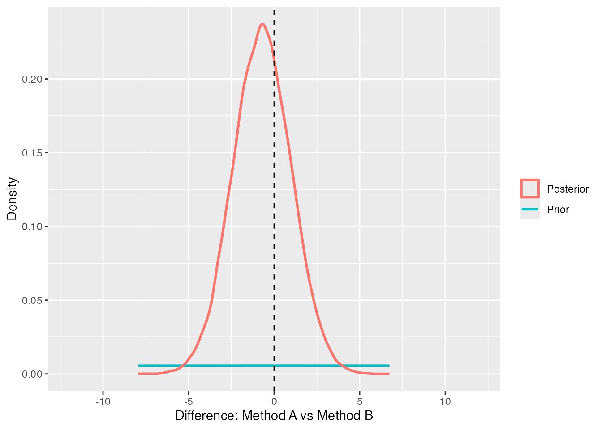
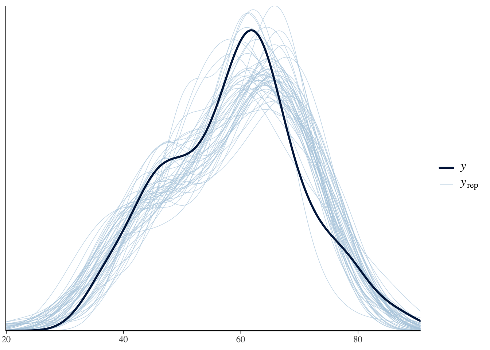

So far we have used the \(t\)-test to compare the means of two groups and analysis of variance (ANOVA) to compare three or more. Both are frequentist procedures: we state a null hypothesis (“the group means do not differ”), compute a test statistic such as \(t\) or \(F\), and reject the null when its probability (the \(p\)-value) is small.
In this chapter we reframe exactly the same problems from a Bayesian point of view. That is, we build a model from a data-generating perspective — “by what mechanism were the data produced?” — and estimate the means and the size of the differences directly as probability distributions. We then turn to decision making — judging whether a difference exists — and introduce three Bayesian tools: the ROPE, the Bayes factor, and the posterior predictive distribution.
This chapter uses both brms, introduced in the chapter on Bayesian statistics in practice, and the Stan probabilistic models from the chapter on Bayesian modeling. We assume familiarity with both, so revisit them as needed.
18.1 From testing to modeling
The \(t\)-test and ANOVA are collectively called “tests for differences in means.” Recall what they actually do: assuming the data follow a normal distribution, they evaluate whether the means differ — more precisely, how easily the difference observed in the data could arise if “all population means are equal.”
From a data-generating perspective this procedure sees only a narrow slice. Can we not consider parameters other than the mean? Can we not isolate the difference between a specific pair of groups? Beyond merely “is there a difference,” can we not ask directly how large the difference is, or what the probability is that one group exceeds another? Bayesian estimation answers such questions naturally.
18.1.1 The multiple-comparison problem disappears
Recall frequentist ANOVA. When a comparison of three or more groups is significant, all we know is that the null hypothesis \(H_0: \mu_1 = \mu_2 = \mu_3\) has been rejected; where the difference lies is still unknown. We then proceed to multiple comparisons — but repeating tests inflates the Type I error rate. Even testing at \(\alpha = 0.05\), two independent tests give an overall error rate of \(1 - (0.95^2) = 0.0975\), well above \(5\%\). Hence the need for adjustments such as Tukey’s or Bonferroni’s method.
Under Bayesian estimation, however, this multiplicity problem does not arise, because we are not repeating probabilistic yes/no decisions. The frequentist \(p\)-value is the chance of the test statistic given that the null is true; it is not the probability of where the parameters lie. By contrast, the posterior distribution from Bayesian estimation is precisely the probability that the parameter lies in a given region. So we may inspect the difference between groups \(A\) and \(B\), between \(A\) and \(C\), and so on, as much as we like, and there is in principle no worry that “comparing many times inflates the error.” For complex factorial designs this property is a great help.
18.2 Recalling the structure of ANOVA
Before building the Bayesian model, let us recall how ANOVA decomposes the variation in the data, because that decomposition becomes the data-generating model directly.
In ANOVA we regard an observation \(x_{ij}\) (the \(i\)-th observation in group \(j\)) as
\[ x_{ij} = \mu + \delta_j + e_{ij} \]
Here \(\mu\) is the grand mean, \(\delta_j\) is the effect of belonging to group \(j\) (the deviation from the grand mean), and \(e_{ij}\) is individual variation, or error. In the example of comparing the mean test scores of three classes, if the grand mean is \(60\) and a class averages \(68\), then the effect of belonging to that class, \(\delta_j\), is \(+8\). Because the effects are deviations relative to the grand mean, summing them over all groups gives \(0\) (\(\sum_j \delta_j = 0\)). This is why, with three levels, the effects have only two degrees of freedom.
In frequentist ANOVA we summed the squared effects \(\delta_j\) over the group sizes to obtain the “between-group variation,” summed the squared errors \(e_{ij}\) to obtain the “within-group variation,” divided each by its degrees of freedom, and declared a difference when the ratio \(F\) was large.
From a Bayesian point of view we reread this very decomposition as a probabilistic model that generates the data. If the error \(e_{ij}\) follows a normal distribution with mean \(0\) and standard deviation \(\sigma\), then
\[ x_{ij} \sim N(\mu + \delta_j, \sigma) \]
All that remains is to estimate the unknowns — the grand mean \(\mu\), the effects \(\delta_j\), and the error scale \(\sigma\) — from the data. Whereas frequentism concentrates on “decomposing the variation and taking a ratio,” Bayes goes directly after “the distribution of the effects \(\delta_j\) themselves.”
18.3 A Bayesian two-group comparison (the \(t\)-test)
Let us begin with the simplest case, a two-group difference in means — the model corresponding to the \(t\)-test.
As a cover story, consider the effect of a study method. Learners who studied the same material under three different study methods (Method A, Method B, Method C) take a common test, with \(40\) people per group. First we extract just Method A and Method C and compare them.
We generate the data from the ANOVA decomposition: a grand mean of \(60\), with effects of \(+8\) for Method A, \(+6\) for Method B, and \(-14\) for Method C (summing to \(0\)), plus error with a standard deviation of \(8\).
pacman::p_load(tidyverse, cmdstanr, bayesplot, bayestestR, brms, logspline)options(brms.backend ="cmdstanr")set.seed(1234)gm <-60# grand meaneff <-c(8, 6, -14) # effect of each group (sums to 0)sigma_true <-8# standard deviation of the errorN <-40# sample size per grouplabels <-c("Method A", "Method B", "Method C")dat <-tibble(method =factor(rep(labels, each = N), levels = labels),score =c(rnorm(N, gm + eff[1], sigma_true),rnorm(N, gm + eff[2], sigma_true),rnorm(N, gm + eff[3], sigma_true) )) |>mutate(idx =as.integer(method))dat |>group_by(method) |>summarize(mean =mean(score), sd =sd(score), n =n())
# A tibble: 3 × 4
method mean sd n
<fct> <dbl> <dbl> <int>
1 Method A 64.7 7.30 40
2 Method B 65.4 8.67 40
3 Method C 46.4 6.32 40
Looking at the group means, in this particular sample Methods A and B come out about the same, with only Method C lower. In the population we built in a \(2\)-point gap between Methods A and B, but sampling variability has all but erased it in the realized data. How Bayesian estimation handles this “sampling wobble” is itself worth watching.
18.3.1 Writing the model in Stan
The Stan code for a two-group comparison is as follows. Save it as bayes_ttest.stan.
data {int<lower=0> N1; // sample size of group 1int<lower=0> N2; // sample size of group 2array[N1] real X1; // observations of group 1array[N2] real X2; // observations of group 2}parameters {real mu1; // population mean of group 1real mu2; // population mean of group 2real<lower=0> sigma; // common standard deviation (equal-variance assumption)}model {// likelihood: each group arises from a normal with the same spread X1 ~ normal(mu1, sigma); X2 ~ normal(mu2, sigma);// priors mu1 ~ normal(50, 50); mu2 ~ normal(50, 50); sigma ~ cauchy(0, 5);}generated quantities {real diff; // the mean difference itselfreal delta; // standardised effect size (Cohen's d)array[N1 + N2] real X_pred; // replicated data for the posterior predictive distribution diff = mu1 - mu2; delta = (mu1 - mu2) / sigma;for (i in1 : N1) { X_pred[i] = normal_rng(mu1, sigma); }for (i in1 : N2) { X_pred[N1 + i] = normal_rng(mu2, sigma); }}
The data block receives the sample size and observations of each of the two groups. The parameters block holds the two population means mu1, mu2 and a common standard deviation sigma. Sharing a single standard deviation corresponds to the “equal-variance assumption” of the \(t\)-test. The model block writes the likelihood — each group’s data arise from a normal distribution centered on its population mean — and supplies the priors.
The block to note is generated quantities. Here we compute the mean difference itself, diff, and a standardized effect size delta (corresponding to Cohen’s \(d\)) obtained by dividing the difference by the standard deviation. Unlike a test, the strength of Bayes is that the size of the difference is available directly as a probability distribution. We also generate new data from the fitted model as X_pred, which we use later for the posterior predictive distribution.
18.3.2 Estimation and reading the results
Compile the model and fit it to the Method A and Method C data.
The Rhat values are all near \(1.00\) and ess_bulk is large, so sampling went well. mu1 and mu2 summarize the posteriors of the population means of Methods A and C. The one to watch is diff, the posterior of the mean difference. Beyond a point estimate, we can see at a glance the range in which the difference lies with \(90\%\) probability (q5 to q95). The standardized effect size delta is also very large, so it seems safe to conclude that there is a substantial difference between Methods A and C.
Numbers aside, it helps to picture the posteriors. The mcmc_areas function in the bayesplot package draws each parameter’s posterior as a density “ridge.”
# posteriors of the two population meansbayesplot::mcmc_areas(fit_t$draws(c("mu1", "mu2")))
# posterior of the mean difference (dashed line at zero)bayesplot::mcmc_areas(fit_t$draws("diff")) + ggplot2::geom_vline(xintercept =0, linetype ="dashed")
Warning: Removed 1 row containing missing values or values outside the scale range
(`geom_vline()`).

We can see at a glance that the two mean ridges are clearly separated, and that the distribution of diff lies well to the right of \(0\) (the dashed line). Almost all of the difference’s ridge is in the positive region, which makes sense given the probability of superiority near \(1\) that we compute next.
A benefit of holding the difference as a probability distribution is that we can freely ask various “data-level hypotheses” after the fact. For example, the probability that Method A’s population mean exceeds Method C’s is just the proportion of the difference’s posterior that is positive. This is called the probability of superiority.
draws_t <- fit_t$draws(format ="df")# probability that Method A exceeds Method Cmean(draws_t$diff >0)
[1] 1
We merely count the proportion of positive values among the MCMC samples of the difference. It is essentially \(1\): we can be all but certain that “Method A is superior.” Whereas the frequentist \(p\)-value is the indirect quantity “how easily the test statistic arises under the null,” here we answer exactly the question we wanted, in terms of probability.
18.4 A Bayesian multi-group comparison (ANOVA)
Next we consider a three-group comparison, the model corresponding to one-way ANOVA. We could keep appending two-group models, but then we would have to rewrite and recompile the code every time the number of groups changes. So we write down the ANOVA decomposition in a form that does not depend on the number of groups.
That is, we build the model from a grand mean \(\mu\) (gm in the code), the effects \(\delta_j\) of each group, and the error \(\sigma\). Because the effects are subject to the constraint \(\sum_j \delta_j = 0\), we only need to estimate \(\mathrm{Lv}-1\) of them; the last one is fixed so that “the total is \(0\).”
18.4.1 Writing the model in Stan
The following code, which does not depend on the number of groups, assumes the data are supplied in tidy-data form. Save it as bayes_anova.stan.
data {int<lower=0> Lv; // number of levels (groups)int<lower=0> L; // total number of observationsarray[L] int<lower=1, upper=Lv> idx; // group ID of each observationarray[L] real X; // observations}parameters {real gm; // grand meanarray[Lv - 1] real raw_delta; // effects; Lv-1 of them, by the degrees of freedomreal<lower=0> sigma; // within-group spread (error)}transformed parameters {array[Lv] real delta; // effects rebuilt so that they sum to zeroarray[Lv] real mu; // population mean of each groupfor (l in1 : (Lv - 1)) { delta[l] = raw_delta[l]; // copy the first Lv-1 effects } delta[Lv] = -sum(raw_delta); // the last one follows from "effects sum to zero"for (l in1 : Lv) { mu[l] = gm + delta[l]; // group mean = grand mean + effect }}model {// likelihood: observation l scatters around the mean of its group, mu[idx[l]]for (l in1 : L) { X[l] ~ normal(mu[idx[l]], sigma); }// priors gm ~ normal(50, 50); raw_delta ~ normal(0, 50); sigma ~ cauchy(0, 5);}generated quantities {array[L] real X_pred; // replicated data for the posterior predictive distributionfor (l in1 : L) { X_pred[l] = normal_rng(mu[idx[l]], sigma); }}
The data block receives the number of levels Lv and the total number of observations L, together with an index idx indicating which group each observation belongs to and the observations X, both as arrays of length L. This accommodates unequal group sizes.
The parameters block holds the grand mean gm, the effects raw_delta (\(\mathrm{Lv}-1\) of them), and the error sigma. In the transformed parameters block we copy the first \(\mathrm{Lv}-1\) entries of raw_delta and set the last to -sum(raw_delta) so the effects \(\delta_j\) sum to \(0\), then build each group mean as mu[l] = gm + delta[l].
The likelihood in the model block is the single line X[l] ~ normal(mu[idx[l]], sigma), expressing that observation \(l\) scatters around the mean of its group idx[l]. The nested reference mu[idx[l]] specifies which group the observation belongs to. As in the two-group case, the generated quantities block produces replicated data X_pred for the posterior predictive distribution.
gm is the grand mean, mu[1] to mu[3] are the population means of each group, and delta[1] to delta[3] are the posteriors of the effects. The effects are positive for Methods A and B and strongly negative for Method C, so the data-generating structure is broadly recovered.
Let us visualize this too. We draw the group means as intervals (mcmc_intervals) and the effects as densities (mcmc_areas).
# population means of each group (point and interval)bayesplot::mcmc_intervals(fit_a$draws(c("mu[1]", "mu[2]", "mu[3]")))
# effect of each group (dashed line at zero)bayesplot::mcmc_areas(fit_a$draws(c("delta[1]", "delta[2]", "delta[3]"))) + ggplot2::geom_vline(xintercept =0, linetype ="dashed")

For the means, Methods A and B sit close together and only Method C is shifted downward. In the effects plot, Method C’s effect is clearly negative, while the effects of Methods A and B overlap around \(0\).
Now let us do the equivalent of post-hoc multiple comparisons. Whereas frequentism required adjusting the significance level, in Bayes we simply subtract the posterior samples of the group means.
The A–C and B–C differences have \(95\%\) intervals that do not straddle \(0\), so we can be all but certain that “there is a difference” (the probability of superiority is also near \(1\)). The A–B difference, by contrast, has a \(95\%\) interval that brackets \(0\), with a probability of superiority near \(0.5\) — so we cannot say there is a clear difference between those two methods. We built a \(2\)-point gap into the population, but with only \(40\) people per group the data could not distinguish it.
Overlaying the posteriors of all pairwise differences makes it easy to see which pairs straddle \(0\).
# posteriors of all pairwise differences (dashed line at zero)bayesplot::mcmc_areas(as.matrix(pair)) + ggplot2::geom_vline(xintercept =0, linetype ="dashed")
The ridges for the A–C and B–C differences lie well to the right of \(0\), whereas the ridge for the A–B difference straddles \(0\), confirming visually that we cannot assert a difference there.
The important point is that we must not jump from “the interval straddles \(0\)” to “there is no difference.” That only means “we cannot say there is a difference,” which is not the same as “there is no difference (they are equivalent).” This very distinction is why we need the decision-making tools described next.
18.5 Three tools for decision making
Once we have the posterior, the question “so how do we actually decide?” remains. Frequentism had the clear (if much-abused) criterion “\(p < 0.05\) is significant.” Bayes offers several alternative tools. Here we look at three representatives: the ROPE, the Bayes factor, and the posterior predictive distribution.
18.5.1 ROPE
ROPE stands for Region Of Practical Equivalence, a decision method proposed by Kruschke (2018). The idea is simple: declare in advance a band such that “if it falls in this range, the difference may be regarded as practically zero.”
For these test scores, say a researcher decides that “a difference of about \(\pm 2\) points is, for practical purposes, no difference.” This \([-2, +2]\) is the ROPE. We then see how much of the difference’s posterior falls inside it.
# A-B difference: practically equivalent?bayestestR::rope(pair$`A-B`, range =c(-2, 2), ci =1)
# Proportion of samples inside the ROPE [-2.00, 2.00]:
Inside ROPE
-----------
72.60 %
# A-C difference: a practical difference?bayestestR::rope(pair$`A-C`, range =c(-2, 2), ci =1)
# Proportion of samples inside the ROPE [-2.00, 2.00]:
Inside ROPE
-----------
0.00 %
Most of the A–B difference’s posterior (over \(70\%\)) lies inside the ROPE. We can thus positively assert that “the difference between the two is practically negligible.” This is something frequentism could not say in principle (accepting the null), and it is a major advantage of Bayes. The A–C difference, on the other hand, lies entirely outside the ROPE, so we judge that there is a practical difference.
This ROPE-based judgment is also intuitive when we overlay the ROPE band on the posteriors of the differences.
# overlay the ROPE band [-2, 2] (red) on the posteriors of the differencesbayesplot::mcmc_areas(as.matrix(pair)) + ggplot2::annotate("rect",xmin =-2, xmax =2, ymin =-Inf, ymax =Inf,alpha =0.15, fill ="red" ) + ggplot2::geom_vline(xintercept =0, linetype ="dashed")
The red band is the ROPE. The ridge of the A–B difference falls mostly inside the red band (practically equivalent), whereas the ridges of the A–C and B–C differences lie far to the right of the band (a practical difference). Overlaying the ROPE band on the “does the interval straddle \(0\)” view lets us distinguish “we cannot say there is a difference” from “there is practically no difference.”
How to set the width of the ROPE is the researcher’s judgment and should rest on domain knowledge. When no criterion comes to mind, Kruschke (2018) suggests \(\pm 0.1\) standardized units as a guide. In bayestestR, setting range = "default" automatically uses a ROPE based on this standardized criterion.
18.5.2 The Bayes factor
The second tool is the Bayes factor (BF). It expresses, as a relative ratio, which of two models better explains the data. As noted in the chapter on Bayesian modeling, Bayesian model evaluation can be said to reduce to the BF.
Here we compare a model in which “the effect is zero (no difference)” with one in which “the effect is non-zero (there is a difference).” One handy way to compute the BF is the Savage–Dickey density ratio, which takes the ratio of the prior and posterior densities at the point zero; if we also sample the prior in brms, bayestestR can compute it.
To that end we first estimate the same ANOVA model with brms. Writing the R formula as score ~ method builds, internally, a model in the form of a grand mean plus group effects. Specifying effect coding (contr.sum) yields coefficients that almost match the effects \(\delta_j\) estimated in Stan, which also serves as a cross-check.
# effect coding: obtain coefficients as deviations (effects) from the grand meancontrasts(dat$method) <-contr.sum(3)fit_brms <-brm( score ~ method,data = dat,prior =set_prior("normal(0, 50)", class ="b"),sample_prior ="yes", # also sample the prior, for the BFchains =4, iter =11000, warmup =1000,refresh =0, seed =1)
method1 and method2 are the effects of Methods A and B, almost matching the delta[1] and delta[2] obtained earlier in Stan. We confirm that the Stan model we wrote ourselves and the model brms assembled automatically return the same results. Within the realm of linear models brms gives the same estimates quickly, so it is convenient for routine analyses.
Bayes Factor (Savage-Dickey density ratio)
Parameter | BF
----------------------
(Intercept) | 9.89e+97
method1 | 1.84e+04
method2 | 3.61e+05
* Evidence Against The Null: 0
The BFs for method1 and method2 are both very large: the “there is an effect” model is overwhelmingly favored over the “the effect is zero” model. A BF above \(3\) is a common guide that one model is favored, and here we are far beyond it.
Conversely, evidence for “no difference (equivalence)” can also be evaluated with a BF. For the A–B difference, let us test the hypothesis “\(\mu_A - \mu_B = 0\)” with the hypothesis function of brms.
Hypothesis Tests for class b:
Hypothesis Estimate Est.Error CI.Lower CI.Upper Evid.Ratio
1 (method1-method2) = 0 -0.7 1.7 -4.02 2.66 38.12
Post.Prob Star
1 0.97
---
'CI': 90%-CI for one-sided and 95%-CI for two-sided hypotheses.
'*': For one-sided hypotheses, the posterior probability exceeds 95%;
for two-sided hypotheses, the value tested against lies outside the 95%-CI.
Posterior probabilities of point hypotheses assume equal prior probabilities.
The Evid.Ratio in the output is the BF supporting the hypothesis “there is no difference.” It is well above \(1\), so for Methods A and B the “no difference” account is favored — consistent with the ROPE conclusion.
18.5.2.1 Picturing the Savage–Dickey method
What the Savage–Dickey density ratio does becomes clear when we overlay the prior and the posterior. What it does is simple: for the parameter of interest, it compares the heights of the prior and posterior densities at the value zero. It asks how much the density at zero has decreased (or increased) after seeing the data (posterior) compared with before (prior). If the density at zero has decreased, that is evidence “the effect is non-zero”; if it has increased, evidence “the effect is zero.”
Let us extract the prior and posterior MCMC samples from the brms fit and draw them. Since we placed a normal(0, 50) prior, we overlay that analytic normal directly (for the difference of two effects, because it is the difference of two independent effects, the prior standard deviation becomes \(50\sqrt{2}\)).
dd <- brms::as_draws_df(fit_brms)# a function to picture the Savage-Dickey methodsd_plot <-function(post, prior_sd, xlim, title) {tibble(value = post) |>ggplot(aes(value)) +# prior (analytic normal)stat_function(fun = dnorm, args =list(mean =0, sd = prior_sd),aes(color ="Prior"), linewidth =1 ) +# posterior (density estimated from the MCMC samples)geom_density(aes(color ="Posterior"), linewidth =1) +geom_vline(xintercept =0, linetype ="dashed") +coord_cartesian(xlim = xlim) +labs(x = title, y ="Density", color =NULL)}# Effect of Method A: the density at zero drops sharply = evidence "the effect is non-zero"sd_plot(dd$b_method1, prior_sd =50, xlim =c(-12, 12), title ="Effect of Method A")

# A-B difference: density piles up at zero = evidence "the difference is zero"sd_plot(dd$b_method1 - dd$b_method2,prior_sd =50*sqrt(2), xlim =c(-12, 12), title ="Difference: Method A vs Method B")

In the first plot, “Effect of Method A,” the posterior forms a ridge clearly to the right of \(0\) against the flat prior. The height of the posterior at zero (the dashed line) is far lower than the prior’s. The ratio of these heights is the BF; because the posterior has all but abandoned zero, the BF is large in favor of “the effect is non-zero.”
The second plot, “Difference: Method A vs Method B,” is the opposite. The posterior ridge sits right on top of \(0\), and its height at zero exceeds the prior’s. Seeing the data has, if anything, increased the density at zero. So this BF points toward supporting “the difference is zero.” The numbers obtained earlier from bayesfactor_parameters and hypothesis correspond to the ratio of heights on the dashed line in these two pictures.
A word of caution about BFs. Binary judgments such as “above \(3\) means there is a difference” can, like \(p\)-values, invite over-interpretation and gaming of the threshold. BFs are also known to vary greatly for the same data depending on the prior, and the choice of prior is debated. For routine models such as the \(t\)-test and ANOVA, the BayesFactor package and JASP(JASP Team 2025), which wraps it in a GUI, compute BFs automatically, so it is worth using them alongside.
# classic BF from the BayesFactor package (the same engine JASP uses)pacman::p_load(BayesFactor)anovaBF(score ~ method, data =as.data.frame(dat))
18.5.3 The posterior predictive distribution
The third tool is the posterior predictive distribution. It has two main uses: one is checking model adequacy — “does the model we set up actually reproduce the data?” — and the other is evaluating the size of the effect at the level of the actual data. We look at each in turn.
18.5.3.1 Checking model adequacy
First, the adequacy check. The idea is this: using the estimated parameters (the posterior), generate artificial data from the model. If the model is adequate, this artificial data (the predicted data) should have a distribution much like the data actually observed. If the predicted data diverge from the real data, the model has failed to capture some feature of the data.
The X_pred we generated in the generated quantities block of the Stan model is exactly this predicted data. A set of data is generated at each MCMC step, so we overlay several of them on the real data, using the ppc_dens_overlay function in the bayesplot package.
y_obs <- dat$scorey_rep <- fit_a$draws("X_pred", format ="matrix")# overlay 50 of the predicted datasets on the real databayesplot::ppc_dens_overlay(y = y_obs, yrep = y_rep[1:50, ])

The dark line is the distribution of the actually observed data, and the light lines are the distributions of predicted data generated from the posterior predictive distribution. If they overlap well, we can judge that “this model, which assumes a normal distribution, reproduces the overall shape of the data well.” Here the data were generated from a normal distribution, so of course they overlap; but with real data that are badly skewed or contain outliers, the normal model’s predictions would fail to reproduce them, showing up as poor overlap. That is then a cue to revise the model — for instance, using a heavier-tailed \(t\) distribution.
18.5.3.2 Measuring the effect at the data level
The posterior predictive distribution is not only for checking model adequacy. In psychological practice, this second use is often the more important one.
The probability of superiority and the posterior of the difference we have seen so far are all at the level of the population mean — a parameter. For example, the probability that Method A’s population mean exceeds Method C’s is essentially \(1\), so the group averages clearly differ. But what we really want to know in practice is often a question at the level of individual data, such as: “if we bring in one person who studied with Method A and one who studied with Method C, in what fraction of cases does the Method A person score higher?”
The posterior predictive distribution is precisely the distribution of predicted individual data. So we can measure the effect at the level of the data rather than the parameters — expressing not just the difference in means but, including the individual variability \(\sigma\), “how strongly the effect is actually felt.”
To that end, let us generate the predicted score of a “random individual” from each posterior sample and compute three quantities.
set.seed(1)# generate the predicted score of a "random individual" in each group from each posterior samplexA <-rnorm(nrow(draws_a), draws_a$`mu[1]`, draws_a$sigma) # Method AxB <-rnorm(nrow(draws_a), draws_a$`mu[2]`, draws_a$sigma) # Method BxC <-rnorm(nrow(draws_a), draws_a$`mu[3]`, draws_a$sigma) # Method C# (1) data-level probability of superiority: a Method A person exceeds a Method C personmean(xA > xC)
[1] 0.954
# for comparison: the population-mean-level probability of superiority (seen earlier)mean(draws_a$`mu[1]`> draws_a$`mu[3]`)
[1] 1
# (2) overlap: how much the two groups' predictive distributions overlapbayestestR::overlap(xA, xC) # Method A vs Method C
# Overlap
24.0%
bayestestR::overlap(xA, xB) # Method A vs Method B
# Overlap
96.9%
# (3) proportion above a threshold: probability of scoring 70 or moremean(xA >=70)
[1] 0.250375
mean(xC >=70)
[1] 0.0015
Let us read the results in turn.
For the probability of superiority, whereas at the population-mean level it was essentially \(1\) (A is certainly higher), at the data level it stays around \(0.95\). This means that even though A is clearly higher on average, because of individual variability there is about a \(5\%\) chance that “a C person happens to beat an A person.” The obvious fact that the group tendency and what happens to a given individual are different is here expressed numerically. This data-level probability of superiority is also called the common-language effect size, and it is well suited to conveying effect size intuitively.
The overlap expresses how much the two groups’ predictive distributions overlap. Methods A and C overlap only about \(20\%\) (they are \(80\%\) separated), showing a large effect. Methods A and B, on the other hand, overlap more than \(90\%\) — practically the same distribution. The smaller the overlap, the larger the effect; the conclusion from the ROPE and Bayes factor that “A and B are equivalent while C is clearly different” shows up here as the degree of overlap of the distributions.
The proportion above a threshold is the probability of exceeding some criterion. If we take a passing line of \(70\) points, for example, more than \(20\%\) of Method A reaches the passing region, whereas almost no one in Method C does. When practical decisions hinge more on “what fraction pass” than on “by how many points the averages differ,” it is clearer to fix a criterion and compare the proportions above it like this.
In this way, the posterior predictive distribution lets us examine the effect from many angles — not just the difference in means but the individual-level probability of superiority, the overlap of the distributions, and the proportion above a criterion. Going beyond a binary “is there a difference or not” to “what the difference actually means in practice” is a strength of the Bayesian approach that starts from a data-generating mechanism.
18.6 Summary
In this chapter we rebuilt the most basic analyses of mean differences — the \(t\)-test and ANOVA — from a Bayesian point of view. Let us collect the key points.
The structure of ANOVA (data = grand mean + effect + error) becomes the data-generating model directly. Writing it in Stan lets us estimate the distribution of the effects \(\delta_j\) directly.
Because Bayes holds the difference as a probability distribution, we can freely do interval estimation, the probability of superiority, all-pairs comparisons, and so on, with no multiple-comparison adjustment.
As tools for judgment we have the ROPE (judgment via a region of practical equivalence), the Bayes factor (model comparison), and the posterior predictive distribution (model-adequacy checking, plus verifying the effect via the data-level probability of superiority, overlap, and proportion above a threshold).
“We cannot say there is a difference” and “there is no difference (they are equivalent)” are different things, and being able to positively assert the latter is a strength of Bayes.
This is not to say frequentist tests are bad. They are clear procedures refined over a long history, and much knowledge has been built upon them. But the Bayesian approach — capturing a mean difference directly as a “distribution of the difference” and widening the scope of decision making — gives the researcher richer expressive power. Rather than one or the other, it is best to hold both points of view.
18.7 Exercises
The following dataset records a measurement (y) for three groups (group). You can download it from ex_anova_bayes.csv. Using the methods covered in this chapter, report the following in order.
Using this chapter’s bayes_anova.stan, estimate the three-group mean differences in tidy-data form, and report the posterior summaries and \(95\%\) intervals of each group’s population mean mu and effect delta.
From the MCMC samples, obtain the posteriors of all three pairwise differences and report each one’s \(95\%\) interval and probability of superiority.
For each pairwise difference, compute bayestestR::rope with a ROPE of \(\pm 0.5\) and discuss whether any pair can be called “practically no difference.”
Estimate the same model with brms (using effect coding), confirm that the coefficients match the Stan results, and then compute the Bayes factor and discuss whether the effects can be said to be non-zero.
Draw the posterior predictive distribution with ppc_dens_overlay and assess whether the model assuming a normal distribution reproduces the data well.
Using the posterior predictive distribution, obtain for each pair of groups (a) the data-level probability of superiority and (b) the overlap of the predictive distributions via bayestestR::overlap. Then fix some criterion and compare the proportions above the threshold across groups. Discuss how these differ from the population-mean-level results.
In your report, include the R code you used and a brief interpretation of each result.
Kruschke, John K. 2018. “Rejecting or Accepting Parameter Values in Bayesian Estimation.”Advances in Methods and Practices in Psychological Science 1 (2): 270–80.